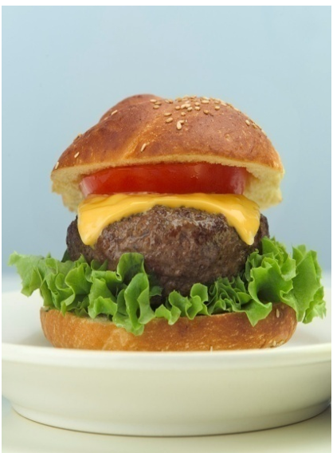

<!-- 원본: GENERAL7/reading (레거시 서버에서 2026-11-14 수집, 정답 제거) -->
<div class="legacy-content"><div id="pageContainer">
<div class="page" id="page-0">
<div class="flex flex-col md:flex-row gap-6">
<div class="w-full md:w-1/2 max-h-[600px] overflow-y-auto">
<h3 class="text-xl font-semibold text-purple-800 mb-4">You should spend about 20 minutes
                                    on <b>Questions 1 - 18,</b> which are based on
                                    Reading
                                    Passage 1 below.
                                </h3>
<div class="text-gray-700 leading-relaxed">
<div style="width:800px; border:1px solid #bbb; padding:20px;">
<div>
<p>
<b>A</b><br/>
</p><div style="width:750px; display:flex; justify-content: left;">
<div style="width:250px;">

</div>
<div style="width:480px;">
<b stylw="font-size:24px;">IT’S YOUR CHOICE</b><br/>
<b>Buy a Burger, get the same one FREE!</b><br/>
                                                    You are invited to enjoy a special treat at Jaspar’s Macquarie
                                                    Plaza.
                                                    Simply present this coupon with your next order and when you
                                                    purchase the burger of your choice it will be our pleasure to give
                                                    you another burger of the same variety absolutely FREE!<br/>
<b>Valid only at Macquarie and ONE voucher per customer per day.</b>
<p style="font-size: 24px;">JASPAR’S</p>
                                                    MACQUARIE PLAZA NORTH RICHMOND<br/><br/>
                                                    Expires 9th May, 2007. Cannot be used with any other Jaspar’s
                                                    offer.<br/><br/>
<b>
                                                        Eat in or Takeaway<br/>
                                                        LEVEL 3, NEXT TO THE CINEMA COMPLEX
                                                    </b>
</div>
</div>
<br/>
<div style="height:10px;"></div>
<div style="width:650px;">
<b>B</b><br/>
<center><b stylw="font-size:24px;">TRELLINIS</b></center><br/>
<p stylw="font-size:20px; text-align:center;">RESTAURANT</p><br/>
<center>
<b>Fine Italian Food</b><br/>
                                                    BYO Eat InTakeaway<br/>
                                                    OPEN Lunch  Dinner
                                                </center>
<br/>
<div style="width:640px; border:0px; border-top:1px solid #000; border-bottom: 1px solid #000;">
<center>Now: Better Menu – Food – Service</center><br/>
<center>Superb Winter Dishes and Dessert</center>
</div>
<br/>
<center>Perfect for Parties</center><br/>
<center>
                                                    Separate party rooms and choice of set<br/>
                                                    menu available for 10-80 people and<br/>
                                                    value for $$$
                                                </center>
<br/>
<div style="width:640px; display: flex; justify-content: left;">
<p style="width:220px;">
<b>Ph 9271 8600</b>
</p>
<p style="width:300px;">
                                                        12 Oxford St. EPPING<br/>
                                                        Opp. PO Ample parking
                                                    </p>
</div>
</div>
<br/>
<div style="height:10px;"></div>
<p>
<b>C</b><br/>
</p><div style="width:700px; display:flex; justify-content: left;">
<div style="width:240px;">
                                                    BYO<br/>
                                                    No Corkage<br/>
                                                    and licensed<br/>
<br/>
<b>9693 2258</b><br/>
<b>9693 2260</b>
</div>
<div style="width:400px;">
<br/>
<b>
                                                        DINNER 7 NIGHTS<br/>
                                                         10% discount on takeaways<br/>
                                                        Free home delivery (local areas only)<br/>
                                                        Banquet–only $16.50 per person<br/>
                                                        Separate party room (up to 90 people)<br/><br/>
                                                        63-65 John Street, RYDE
                                                    </b>
</div>
</div>
<br/>
<div style="height:10px;"></div>
<div>
<b>D</b><br/>
<b style="font-size:26px;">writer’s café</b><br/>
<b>
                                                    Dante Trattoria, Shop 4, Spring Centre,
                                                    Soldiers Road, Neutral Bay</b><br/><br/>
<div style="width:700px; display:flex; justify-content: left; flex-wrap: wrap;">
<div style="width:280px;">
                                                        PHONE<br/>
                                                        OPEN 8am-midnight<br/>
                                                        CUISINE
                                                    </div>
<div style="width:400px;">
                                                        9953 1212<br/>
                                                        8am-midnight<br/>
                                                        Italian influence, menu changes<br/>
                                                        every four months. Breakfast<br/>
                                                        includes toast, pancakes, smoked<br/>
                                                        salmon, scrambled eggs, gourmet<br/>
                                                        sausages and fruit; light meals<br/>
                                                        and lunch menu includes pasta,<br/>
                                                        salad, crepes, seafood, soup<br/>
                                                        focaccia, burgers and desserts.
                                                    </div>
<div style="width:280px;">
                                                        PRICES<br/>
</div>
<div style="width:400px;">
                                                        Breakfast $ 4.50-$8.90<br/>
                                                        Lunch $6.90-13.90
                                                    </div>
<div style="width:280px;">
                                                        ATMOSPHERE<br/>
</div>
<div style="width:400px;">
                                                        Relaxed and quiet.<br/>
                                                        Patrons can dine inside and out.
                                                    </div>
<div style="width:280px;">
                                                        CREDIT CARDS<br/>
</div>
<div style="width:400px;">
                                                        Yes<br/>
</div>
</div>
</div>
<br/>
<div style="height:10px;"></div>
<div style="width:700px;">
<b>E</b><br/>
<center>
<b styke="font-size:28px;">vegetarian</b><br/>
<b>COOKING CLASSES</b><br/><br/>
                                                    Are you looking for some <b>healthy alternatives</b><br/>
                                                    to your menu?<br/><br/>
                                                    Join our creative and nutritious three-week<br/>
                                                    program conducted by qualified<br/>
                                                    professionals, including delicious tastings<br/>
                                                    and demonstrations.<br/><br/>
                                                    Starting Wednesday May 10 at 7:15 pm.<br/>
                                                    Centre for Health Management<br/><br/>
                                                    SYDNEY DAY HOSPITAL<br/>
<b>BOOK NOW 9748 9696</b>
</center>
</div>
</div>
</div>
<br/>
<div style="width:800px; border:1px solid #bbb; padding:20px;">
<p>Read the “Guided Walks and Nature Activities” information below, and answer
                                        </p><br/>
<b style="font-size:30px;">
                                            Ku-ring-gai Chase National Park
                                        </b>
<br/>
<b>GUIDED WALKS AND NATURE ACTIVITIES</b>
<br/>
<div style="width:750px; display: flex; justify-content: left;">
<div style="width:300px; border:1px solid #000;">
<b>SUNDAY MAY 7</b>     EASY<br/>
<i><b>Early Morning Stroll in</b></i><br/>
<i><b>Upper Lane Cove Valley</b></i>
<br/><br/>
                                                Meet at 7:30 a.m. at the end of Day Rd,<br/>
                                                Cheltenham while the bush is<br/>
                                                alive with birdsong.<br/><br/>
                                                Roundtrip: 4 hours<br/><br/>
<b>FRIDAY MAY 12</b>     MEDIUM<br/>
<i><b>Possum Prowl</b></i><br/><br/>
                                                Meet 7:30 p.m. at Seaforth Oval<br/>
                                                carpark. Enjoy the peace of the<br/>
                                                bush at night. Lovely water views.<br/>
                                                Bring flashlights and wear non-slip<br/>
                                                shoes as some rock clambering<br/>
                                                involved. Coffee and biscuits<br/>
                                                supplied.<br/><br/>
                                                Duration: 2 hours<br/><br/>
<b>SUNDAY JUNE 4</b>     HARD<br/>
<i><b>Bairne / Basin Track</b></i><br/><br/>
                                                Meet 9:30 a.m. Track #8, West<br/>
                                                Head Road. Mgnificent Pittwater<br/>
                                                views. Visit Bechwood cottage.<br/>
                                                Bring lunch and drink. Some<br/>
                                                steep sections. Reasonable fitness<br/>
                                                required<br/><br/>
                                                Duration: approx. 6 hours.<br/><br/>
</div>
<div style="width:440px; border:1px solid #000;">
<b>FRIDAY JUNE 16</b>     EASY<br/>
<i><b>Poetry around a mid-winter</b></i><br/>
<i><b>campfire</b></i><br/><br/>
                                                Meet 7:00 p.m. Kalkaari Visitor<br/>
                                                Centre. Share your favourite poem<br/>
                                                or one of your own with a group<br/>
                                                around a gently crackling fire. Billy<br/>
                                                tea and damper to follow. Dress up warmly.<br/>
                                                Bring a mug and a rug (or a
                                                chair).<br/><br/>
                                                Cost $ 4.00 per person<br/><br/>
                                                Duration: 2.5 hours<br/><br/>
<b>SUNDAY JUNE 25</b>     EASY<br/>
<i><b>Morning Walk at Mitchell Park</b></i><br/><br/>
                                                Meet 8:30 a.m. entrance to Mitchell<br/>
                                                Park, Mitchell Park Rd, Cattai fo<br/>
                                                a pleasant walk wandering through rainforest,<br/>
                                                river flats and dry forest<br/>
                                                to swampland. Binoculars a must to bring, as<br/>
                                                many birds live here.
                                                Finish with morning tea.<br/><br/>
                                                Duration: 3 hours.<br/><br/>
<b>GRADING</b><br/><br/>
<div style="width:440px; display: flex; justify-content: left;">
<div style="width:200px;">
<p><b>EASY</b></p><br/>
<p><b>MEDIUM</b></p><br/>
<p><b>HARD</b></p>
</div>
<div style="width:230px;">
<p>suitable for ALL fitness levels</p><br/>
<p>for those who PERIODICALLY exercise</p><br/>
<p>only if you REGULARLY exercise</p>
</div>
</div>
</div>
</div>
</div>
</div>
</div>
<div class="w-full md:w-1/2 max-h-[600px] overflow-y-auto">
<div class="question mb-6">
<div id="box3nav">
<p><b>QUESTIONS 1 - 6</b></p>
</div>
<br/>
<div>
                                        There are five advertisements <b>A-E</b> on the next page.<br/>
                                        Answer <b>Questions 1-6</b> below by writing the letters of the appropriate<br/>
                                        advertisements in <b>boxes 1-6</b> on your answer sheet.
                                        <br/><br/>
<b>1.</b> Which advertisement is not for a restaurant?  <input autocomplete="off" class="border border-purple-300 rounded px-3 py-2 w-full bg-white text-gray-800" name="q1" placeholder="(1)" style="width:150px; border:0; border-bottom:1px solid #000; text-align:center;" type="text"/><br/>
<b>2.</b> Which two advertisements offer facilities for
                                        parties?  <input autocomplete="off" class="border border-purple-300 rounded px-3 py-2 w-full bg-white text-gray-800" name="q2" placeholder="(2)" style="width:150px; border:0; border-bottom:1px solid #000; text-align:center;" type="text"/><br/>
<div style="height:5px;"></div>
<b>3.</b> Which restaurant states that it serves breakfast?  <input autocomplete="off" class="border border-purple-300 rounded px-3 py-2 w-full bg-white text-gray-800" name="q3" placeholder="(3)" style="width:150px; border:0; border-bottom:1px solid #000; text-align:center;" type="text"/><br/>
<div style="height:5px;"></div>
<b>4.</b> Which restaurant will give you an extra serving if you present the
                                        coupon?  <input autocomplete="off" class="border border-purple-300 rounded px-3 py-2 w-full bg-white text-gray-800" name="q4" placeholder="(4)" style="width:150px; border:0; border-bottom:1px solid #000; text-align:center;" type="text"/><br/>
<div style="height:5px;"></div>
<b>5.</b> Which restaurant does not offer a takeaway service?  <input autocomplete="off" class="border border-purple-300 rounded px-3 py-2 w-full bg-white text-gray-800" name="q5" placeholder="(5)" style="width:150px; border:0; border-bottom:1px solid #000; text-align:center;" type="text"/><br/>
<div style="height:5px;"></div>
<b>6.</b> Which restaurant will bring the food you order to your
                                        house?  <input autocomplete="off" class="border border-purple-300 rounded px-3 py-2 w-full bg-white text-gray-800" name="q6" placeholder="(6)" style="width:150px; border:0; border-bottom:1px solid #000; text-align:center;" type="text"/><br/>
<div style="height:5px;"></div>
</div>
</div>
<div class="question mb-6">
<div id="box3nav">
<p><b>QUESTIONS 7 - 12</b></p>
</div>
<br/>
<div>
                                        The following text is a series of general instructions for using a microwave
                                        oven.<br/>
<div style="width:700px; border:1px solid #000; padding:5px;">
<b>E</b> if the underlined section gives an EXAMPLE of the instruction<br/>
<b>R</b> if the underlined section gives a REASON for the instruction<br/>
<b>CP</b> if the underlined section is a CORRECT PROCEDURE<br/>
</div>
<br/>
<b style="font-size: 30px; color:#ccc;">
                                            GENERAL INSTRUCTIONS FOR THE USE OF YOUR MICROWAVE
                                        </b>
<br/>
<b>EXAMPLE</b><br/>
                                        Do not boil eggs in their shell (unless otherwise stated)<br/>
<u>Pressure will build up and the eggs will explode.</u>
<br/><br/>
<b>7.</b> Whilst heating liquids which contain air (e.g. milk or milk-based
                                        fluids),
                                        stir several times during heating <u>to avoid spillage of the liquid from the
                                            container.</u><br/>
<div class="space-y-2 ml-6">
<label><input autocomplete="off" class="mr-2 w-4 h-4 accent-purple-600" name="q7" type="radio" value="E"/><b>E</b></label>   
                                            <label><input autocomplete="off" class="mr-2 w-4 h-4 accent-purple-600" name="q7" type="radio" value="R"/><b>R</b></label>   
                                            <label><input autocomplete="off" class="mr-2 w-4 h-4 accent-purple-600" name="q7" type="radio" value="CP"/><b>CP</b></label>
</div>
<br/>
<b>8.</b> <u>Potatoes, apples, egg yolks, whole squash and sausages are all
                                            foods
                                            with
                                            non-porous skins.</u> This type of food must be pierced before cooking, to
                                        prevent
                                        bursting.<br/>
<div class="space-y-2 ml-6">
<label><input autocomplete="off" class="mr-2 w-4 h-4 accent-purple-600" name="q8" type="radio" value="E"/><b>E</b></label>   
                                            <label><input autocomplete="off" class="mr-2 w-4 h-4 accent-purple-600" name="q8" type="radio" value="R"/><b>R</b></label>   
                                            <label><input autocomplete="off" class="mr-2 w-4 h-4 accent-purple-600" name="q8" type="radio" value="CP"/><b>CP</b></label>
</div>
<br/>
<b>9.</b> Do not dry clothes or other materials in the oven. <u>They may catch
                                            on
                                            fire.</u><br/>
<div class="space-y-2 ml-6">
<label><input autocomplete="off" class="mr-2 w-4 h-4 accent-purple-600" name="q9" type="radio" value="E"/><b>E</b></label>   
                                            <label><input autocomplete="off" class="mr-2 w-4 h-4 accent-purple-600" name="q9" type="radio" value="R"/><b>R</b></label>   
                                            <label><input autocomplete="off" class="mr-2 w-4 h-4 accent-purple-600" name="q9" type="radio" value="CP"/><b>CP</b></label>
</div>
<br/>
<b>10.</b> Do not cook food directly on glass oven tray unless indicated in
                                        recipes.
                                        <u>Food should be placed in a suitable cooking utensil.</u><br/>
<div class="space-y-2 ml-6">
<label><input autocomplete="off" class="mr-2 w-4 h-4 accent-purple-600" name="q10" type="radio" value="E"/><b>E</b></label>   
                                            <label><input autocomplete="off" class="mr-2 w-4 h-4 accent-purple-600" name="q10" type="radio" value="R"/><b>R</b></label>   
                                            <label><input autocomplete="off" class="mr-2 w-4 h-4 accent-purple-600" name="q10" type="radio" value="CP"/><b>CP</b></label>
</div>
<br/>
<b>11.</b> Do not hit control panel. <u>Damage to controls may occur.</u><br/>
<div class="space-y-2 ml-6">
<label><input autocomplete="off" class="mr-2 w-4 h-4 accent-purple-600" name="q11" type="radio" value="E"/><b>E</b></label>   
                                            <label><input autocomplete="off" class="mr-2 w-4 h-4 accent-purple-600" name="q11" type="radio" value="R"/><b>R</b></label>   
                                            <label><input autocomplete="off" class="mr-2 w-4 h-4 accent-purple-600" name="q11" type="radio" value="CP"/><b>CP</b></label>
</div>
<br/>
<b>12.</b> <u>Clean the oven, the door and the seals with water and a mild
                                            detergent at regular intervals.</u> Never use abrasive cleaner that may
                                        scratch the surfaces
                                        around the door.<br/>
<div class="space-y-2 ml-6">
<label><input autocomplete="off" class="mr-2 w-4 h-4 accent-purple-600" name="q12" type="radio" value="E"/><b>E</b></label>   
                                            <label><input autocomplete="off" class="mr-2 w-4 h-4 accent-purple-600" name="q12" type="radio" value="R"/><b>R</b></label>   
                                            <label><input autocomplete="off" class="mr-2 w-4 h-4 accent-purple-600" name="q12" type="radio" value="CP"/><b>CP</b></label>
</div>
</div>
</div>
<div class="question mb-6">
<div id="box3nav">
<p><b>QUESTIONS 13 - 18</b></p>
</div>
<br/>
<div style="width:680px; display:flex; justify-content: left;">
<div style="width:160px; border:1px solid #000;">
<b>
                                                ACTIVITY<br/><br/>
                                                Early Morning Stroll<br/><br/>
                                                Morning Walk<br/><br/>
                                                Poetry<br/><br/><br/><br/>
<b>16.</b>  <input autocomplete="off" class="border border-purple-300 rounded px-3 py-2 w-full bg-white text-gray-800" name="q16" placeholder="(16)" style="width:150px; border:0; border-bottom:1px solid #000; text-align:center;" type="text"/>
</b>
</div>
<div style="width:160px; border:1px solid #000;">
<b>
                                                What to bring/wear<br/><br/><br/><br/>
<b>14.</b>  <input autocomplete="off" class="border border-purple-300 rounded px-3 py-2 w-full bg-white text-gray-800" name="q14" placeholder="(14)" style="width:150px; border:0; border-bottom:1px solid #000; text-align:center;" type="text"/><br/><br/>
                                                warm clothes,<br/>
                                                mug, rug/chair,<br/>
                                                poem<br/><br/><br/>
                                                flashlight,<br/>
<b>17</b>  <input autocomplete="off" class="border border-purple-300 rounded px-3 py-2 w-full bg-white text-gray-800" name="q17" placeholder="(17)" style="width:150px; border:0; border-bottom:1px solid #000; text-align:center;" type="text"/>
</b>
</div>
<div style="width:160px; border:1px solid #000;">
<b>
                                                What is supplied<br/><br/><br/><br/>
<b>15.</b>  <input autocomplete="off" class="border border-purple-300 rounded px-3 py-2 w-full bg-white text-gray-800" name="q15" placeholder="(15)" style="width:150px; border:0; border-bottom:1px solid #000; text-align:center;" type="text"/><br/><br/><br/><br/>
                                                coffee, biscuits
                                            </b>
</div>
<div style="width:160px; border:1px solid #000;">
<b>
                                                Chief Attraction<br/><br/>
<b>13.</b>  <input autocomplete="off" class="border border-purple-300 rounded px-3 py-2 w-full bg-white text-gray-800" name="q13" placeholder="(13)" style="width:150px; border:0; border-bottom:1px solid #000; text-align:center;" type="text"/><br/><br/>
                                                varied landscape<br/>
                                                birds<br/><br/><br/><br/>
                                                peace,<br/>
<b>18.</b>  <input autocomplete="off" class="border border-purple-300 rounded px-3 py-2 w-full bg-white text-gray-800" name="q18" placeholder="(18)" style="width:150px; border:0; border-bottom:1px solid #000; text-align:center;" type="text"/>
</b>
</div>
</div>
</div>
</div>
</div>
</div>
<div class="page" id="page-1">
<div class="flex flex-col md:flex-row gap-6">
<div class="w-full md:w-1/2 max-h-[600px] overflow-y-auto">
<h3 class="text-xl font-semibold text-purple-800 mb-4">You should spend
                                    about 20 minutes on Questions<br/>
                                    Below are the course descriptions for five courses offered by a local community
                                    college.
                                </h3>
<div class="text-gray-700 leading-relaxed">
<div style="width:800px; border:1px solid #575757; padding:20px;">
<center><b style="font-size:55px; color:#575757; font-family: 'Times New Roman', Times, serif;">LEARN</b>
</center><br/>
<center><b style="font-size:30px; color:#575757; font-family: 'Times New Roman', Times, serif;">COMMUNITY
                                                COLLEGE COURSES</b>
</center>
<br/>
<div>
<p>
<b>COURSE A</b><br/>
                                                If you have no previous experience with computers, or you have some gaps
                                                in your knowledge of the basics, then this is an appropriate course for
                                                you. This course will give you a thorough grounding in the fundamental
                                                concepts of computing common to all computers. It is a practical “hands
                                                on” course that looks at how a computer operates and how the programs
                                                work. Using three of the most widely used programs in business, you will
                                                learn the basics of word processing, spreadsheets and databases. By the
                                                completion of the course you will be productive at a basic level and
                                                competent to progress to the elementary level of any specialised
                                                programs. No previous computer skills assumed.
                                            </p>
<br/>
<div style="width:700px; display: flex; justify-content: left;">
<div style="width:240px;">
<b>Duration:</b><br/>
<b>Fee:</b><br/>
<b>25045</b><br/>
<b>25006</b>
</div>
<div style="width:440px;">
                                                    2 days<br/>
                                                    $279<br/>
                                                    Wed/Thurs 12, 13 April 9:15 am-5:15 pm<br/>
                                                    Tues/Wed/ 30, 31 May 9:15 am-5:15 pm
                                                </div>
</div>
<br/>
<div style="height:10px;"></div>
<p>
<b>COURSE B</b><br/>
                                                In dealing with your customers you are in a position of great
                                                importance. Your abilities directly influence the company’s bottom line.
                                                This course will look at ways to revitalise the customer contact skills
                                                you already have and add many more. Learn ways to improve your
                                                communication with customers, at all levels, techniques to use with
                                                difficult customers, how to confidently handle complaints and keep your
                                                cool in stressful situations. Most importantly, you will learn to build
                                                goodwill and trust with your customers. Course notes, lunch and
                                                refreshments provided.
                                            </p>
<br/>
<div style="width:700px; display: flex; justify-content: left;">
<div style="width:240px;">
<b>Tutor:</b><br/>
<b>Fee:</b><br/>
<b>25026</b>
</div>
<div style="width:440px;">
                                                    Joshua Smith<br/>
                                                    $145<br/>
                                                    Sat 20 May   9:00 am-4:00 pm
                                                </div>
</div>
<br/>
<div style="height:10px;"></div>
<p>
<b>COURSE C</b><br/>
                                                Everything you need to know before purchasing or starting a coffee shop,
                                                tearooms or small restaurant. A useful course for all aspiring owners,
                                                managers and employees of these small businesses to assist them in
                                                ensuring they don’t make expensive mistakes and that their customers
                                                return again and again… Bring lunch. Notes and manual available (if
                                                required) for $25 from Tutor.
                                            </p>
<br/>
<div style="width:700px; display: flex; justify-content: left;">
<div style="width:240px;">
<b>Tutor:</b><br/>
<b>Fee:</b><br/>
<b>25252</b>
</div>
<div style="width:440px;">
                                                    Sarah Bridge<br/>
                                                    $55 (no concession)<br/>
                                                    Sat 6 May   10:00 am-3:00 pm
                                                </div>
</div>
<br/>
<div style="height:10px;"></div>
<p>
<b>COURSE D</b><br/>
                                                This course covers three areas of business communication:<br/>
<b>•</b>   Interpersonal Communication<br/>
<b>•</b>   Telephone Skills<br/>
<b>•</b>   Business Writing Skills<br/><br/>
                                                Learning Outcomes<br/>
                                                At the end of the course, participants will be able to effectively: plan
                                                and write workplace documents in plain English; gather, record and
                                                convey information using the telephone and in a face-to-face situation
                                                and interact with clients within and external to the workplace about
                                                routine matters using the telephone and face-to-face contact. An
                                                excellent course for those entering or returning to the workforce. A
                                                Statement of Competency is issued if the assessment requirements are
                                                successfully completed.<br/><br/>
</p>
<br/>
<div style="width:700px; display: flex; justify-content: left;">
<div style="width:240px;">
<b>Tutor:</b><br/>
<b>Fee:</b><br/>
<b>25021</b>
</div>
<div style="width:440px;">
                                                    Douglass McDougall<br/>
                                                    $135<br/>
                                                    Wed 3 May-21 June   7:00-9:00 pm
                                                </div>
</div>
<br/>
<div style="height:10px;"></div>
<p>
<b>COURSE E</b><br/>
                                                Are you hating work, wanting a different job, needing a change or
                                                wanting a promotion? Come along to a new two-day program for women. We
                                                will explore your work goals and what holds you back; your fears in a
                                                work environment and how you handle them; your image and what it says to
                                                others and your communication style and what it says. You will develop
                                                more confidence to make changes, get clearer about what you want and
                                                have the courage to act. It is a relaxed, informative and fun workshop
                                                with lots of practical tips!
                                            </p>
<br/>
<div style="width:700px; display: flex; justify-content: left;">
<div style="width:240px;">
<b>Tutor:</b><br/>
<b>Fee:</b><br/>
<b>25036</b>
</div>
<div style="width:440px;">
                                                    Sophie Bradley<br/>
                                                    $199<br/>
                                                    Sun 18, 25 Junee   9:30 am-4:30 pm
                                                </div>
</div>
</div>
</div>
</div>
</div>
<div class="w-full md:w-1/2 max-h-[600px] overflow-y-auto">
<div class="question mb-6">
<div id="box3nav">
<p><b>QUESTIONS 19 - 23</b></p>
</div>
<br/>
<div>
                                        Choose the title which best fits each course and write the number I-IX in boxes
                                        19-23 on your answer sheet. Note: there are more titles than you will
                                        need.<br/>
<div style="height:5px;"></div>
<div>
<b>i.</b> Managing Expansion In your Restaurant<br/>
<b>ii.</b> Making Career Changes For Women<br/>
<b>iii.</b> Effective Workplace Communication<br/>
<b>iv.</b> Exceptional Customer Service<br/>
<b>v.</b> Advance Computing Skills<br/>
<b>vi.</b> Communicating Effectively<br/>
<b>vii.</b> Introductory Computer Skills<br/>
<b>viii.</b> Restaurant Management For Non-managers<br/>
<b>ix.</b> Business Writing Course
                                        </div>
<br/>
                                        Course <b>A</b>:nbsp;<input autocomplete="off" class="border border-purple-300 rounded px-3 py-2 w-full bg-white text-gray-800" name="q19" placeholder="(19)" style="width:150px; border:0; border-bottom:1px solid #000; text-align:center;" type="text"/><br/>
<div style="height:5px;"></div>
                                        Course <b>B</b>:<input autocomplete="off" class="border border-purple-300 rounded px-3 py-2 w-full bg-white text-gray-800" name="q20" placeholder="(20)" style="width:150px; border:0; border-bottom:1px solid #000; text-align:center;" type="text"/><br/>
<div style="height:5px;"></div>
                                        Course <b>C</b>:<input autocomplete="off" class="border border-purple-300 rounded px-3 py-2 w-full bg-white text-gray-800" name="q21" placeholder="(21)" style="width:150px; border:0; border-bottom:1px solid #000; text-align:center;" type="text"/><br/>
<div style="height:5px;"></div>
                                        Course <b>D</b>:<input autocomplete="off" class="border border-purple-300 rounded px-3 py-2 w-full bg-white text-gray-800" name="q22" placeholder="(22)" style="width:150px; border:0; border-bottom:1px solid #000; text-align:center;" type="text"/><br/>
<div style="height:5px;"></div>
                                        Course <b>E</b>:<input autocomplete="off" class="border border-purple-300 rounded px-3 py-2 w-full bg-white text-gray-800" name="q23" placeholder="(23)" style="width:150px; border:0; border-bottom:1px solid #000; text-align:center;" type="text"/>
</div>
</div>
<div class="question mb-6">
<div id="box3nav">
<p><b>QUESTIONS 24 - 28</b></p>
</div>
<br/>
<div>
                                        From the information about the courses, answer the <b>Questions 24-28</b> by
                                        writing
                                        the appropriate letter or letters <b>A-E</b> in boxes <b>24-28</b> on your
                                        answer sheet.<br/>
<div style="height:5px;"></div>
<b>24.</b> Which course is not specifically related to people’s
                                        jobs? <input autocomplete="off" class="border border-purple-300 rounded px-3 py-2 w-full bg-white text-gray-800" name="q24" placeholder="(24)" style="width:150px; border:0; border-bottom:1px solid #000; text-align:center;" type="text"/><br/>
<div style="height:5px;"></div>
<b>25.</b> In which course are men not invited to participate? <input autocomplete="off" class="border border-purple-300 rounded px-3 py-2 w-full bg-white text-gray-800" name="q25" placeholder="(25)" style="width:150px; border:0; border-bottom:1px solid #000; text-align:center;" type="text"/><br/>
<div style="height:5px;"></div>
<b>26.</b> Which two courses have course notes to go with them? <input autocomplete="off" class="border border-purple-300 rounded px-3 py-2 w-full bg-white text-gray-800" name="q26" placeholder="(26)" style="width:150px; border:0; border-bottom:1px solid #000; text-align:center;" type="text"/><br/>
<div style="height:5px;"></div>
<b>27.</b> Which course will deal with writing skills? <input autocomplete="off" class="border border-purple-300 rounded px-3 py-2 w-full bg-white text-gray-800" name="q27" placeholder="(27)" style="width:150px; border:0; border-bottom:1px solid #000; text-align:center;" type="text"/><br/>
<div style="height:5px;"></div>
<b>28.</b> Which course is on at night? <input autocomplete="off" class="border border-purple-300 rounded px-3 py-2 w-full bg-white text-gray-800" name="q28" placeholder="(28)" style="width:150px; border:0; border-bottom:1px solid #000; text-align:center;" type="text"/>
</div>
</div>
<div class="question mb-6">
<div id="box3nav">
<p><b>QUESTIONS 29</b></p>
</div>
<br/>
<div>
                                        Three of the courses specifically cover the same subject. Choose the subject
                                        from the list below and write its name in <b>box 29</b> on your answer
                                        sheet.<br/>
<div style="height:5px;"></div>
<b>29.</b>  <input autocomplete="off" class="border border-purple-300 rounded px-3 py-2 w-full bg-white text-gray-800" name="q29" placeholder="(29)" style="width:150px; border:0; border-bottom:1px solid #000; text-align:center;" type="text"/><br/>
<div style="height:5px;"></div>
<b>Writing Skills</b><br/>
<b>Computers</b><br/>
<b>Communication</b><br/>
<b>Finance</b><br/>
<b>Work goals</b><br/>
<b>Management</b>
</div>
</div>
</div>
</div>
</div>
<div class="page" id="page-2">
<div class="flex flex-col md:flex-row gap-6">
<div class="w-full md:w-1/2 max-h-[600px] overflow-y-auto">
<h3 class="text-xl font-semibold text-purple-800 mb-4">You should spend
                                    about
                                    20 minutes on <b>Questions 30-40</b> which are based on this passage 3.<br/>
                                    The reading passage below describes some of the great inventions.
                                </h3>
<div class="text-gray-700 leading-relaxed">
<div style="width:800px; border:1px solid #bbb; padding:20px;">
<div>
<p>
<b>GREAT INVENTIONS</b><br/>
                                                There are some things we use every day. Can you imagine a world without
                                                zippers to fasten clothing? Have you ever wondered about the layout of
                                                the keyboard of a typewriter, which we see every day on the computer?
                                                These are just two of the many inventions which have made our lives
                                                easier. Maybe that’s why we don’t think about them very much!
                                            </p>
<br/>
<div style="height:10px;"></div>
<p>
<b>THE ZIPPER</b><br/>
                                                Whatever did we do before the invention of the zipper?
                                                In 1893 the world’s first zipper was produced in Chicago. Although the
                                                inventor claimed that it was reliable fastening for clothing, this was
                                                not the case. The Chicago zipper sprang open without warning, or jammed
                                                shut, and it swiftly lost popularity. Twenty years later a Swedish-born
                                                engineer called Sundback solved the problem. He attached tiny cups to
                                                the backs of the interlocking teeth, and this meant that the teeth could
                                                be enmeshed more firmly and reliably.<br/>
</p><div style="height:10px;"></div>
                                            At first zippers were made of metal. They were heavy, and if they got
                                            stuck it was difficult to free them. Then came nylon zippers which were
                                            lighter and easier to use, and had smaller teeth. The fashion industry
                                            liked the new zippers far better because they did nor distort the line
                                            of the garment or weigh down light fabrics. They were also easier for
                                            the machinist to fit into the garment.<br/>
<div style="height:10px;"></div>
                                            Meanwhile a new fastening agent made its appearance at the end of the
                                            twentieth century: Velcro. Velcro is another product made from the
                                            nylon. Nylon is a very tough synthetic fiber first developed in the
                                            1930s, and bearing a name to remind the hearer of the two places where
                                            it was developed: NY for New York and LON for London. Velcro is made
                                            with very small nylon hooks on one side of the fastening which catch
                                            tiny looped whiskers on the other side of the fastening. It is strong
                                            and durable.<br/>
<div style="height:10px;"></div>
                                            Velcro is used on clothing, luggage and footwear. It is quick and easy
                                            to fasten and unfasten, and has taken a large part of the zipper’s share
                                            of the market. It is also used in ways a zipper cannot be used–for
                                            instance as an easily changed fastening on plaster casts, and to hold
                                            furnishing fabrics in position.
                                            <br/>
<div style="height:10px;"></div>
<p>
<b>THE TYPEWRITER AND THE KEYBOARD</b><br/>
                                                The keyboard of the modern typewriter is laid out in a most odd fashion.
                                                Why would anyone place the letters on the left side of the top row of
                                                the keyboard in the order Q W E R T Y? The answer is simple: to slow the
                                                typist down. But first, let’s consider the history of the typewriter
                                                itself.<br/>
</p><div style="height:10px;"></div>
                                            In the 1860’s a newspaper editor called Christopher Sholes lived in
                                            Milwaukee, USA. Sholes invented the first of the modern typewriters,
                                            although there had been patents for typewriter-like machines as early as
                                            1714, when Queen Anne of England granted a patent to a man called Henry
                                            Mill for a machine which would make marks on paper “so neat and exact as
                                            not to be distinguished from print”. In 1829, across the Atlantic in
                                            Detroit USA, William Austin Burt took out a patent on a typewriter-like
                                            machine, four years before the French inventor Xavier Projean produced
                                            his machine designed to record words at a speed comparable to someone
                                            writing with a pen.<br/>
<div style="height:10px;"></div>
                                            So the typewriter was not a new idea, although there had not been a
                                            successful realisation of the idea before Christopher Sholes’s machine.
                                            His typewriter became very popular, and soon people learned to type very
                                            quickly–so quickly, in fact, that the keys became tangled. On manual
                                            typewriters the characters were set on the end of bars which rose to
                                            strike the paper when the key was pressed. In the first models, the keys
                                            were set alphabetically. When a quick typist tapped out a word like
                                            federal, it was very likely the adjacent e and d keys would become
                                            entangled.<br/>
<div style="height:10px;"></div>
                                            Sholes therefore set about finding ways to slow the typist down. He
                                            looked for the letters which were most often used in English, and then
                                            placed them far away from each other. For instance, q and u, which are
                                            almost always used together in English, are separated by five
                                            intervening letters. The plan worked, and the typist was slowed down a
                                            little.<br/>
<div style="height:10px;"></div>
                                            When computers came into use in the latter part of the twentieth century
                                            it was suggested that the keyboard should be rationalised. After all,
                                            there was no longer any need to avoid clashing manual typewriter keys.
                                            One new board included keys which produced letters which frequently
                                            occur together in English, like ing and th and ed, so the word thing
                                            would take two strokes to write instead of five. Although this made
                                            perfect sense, people found it very hard to learn to use a new keyboard,
                                            and the idea was dropped. It is unlikely that the keyboard will ever be
                                            changed: as we approach the twenty-first century the voice-activated
                                            computer, already in an advanced state of development, is becoming more
                                            and more accessible. It is very likely that we will soon have machines
                                            which take dictation as we speak to them, and the keyboard will be used
                                            for corrections.
                                        </div>
</div>
</div>
</div>
<div class="w-full md:w-1/2 max-h-[600px] overflow-y-auto">
<div class="question mb-6">
<div id="box3nav">
<p><b>QUESTIONS 30 - 35</b></p>
</div>
<br/>
<div>
                                        From the information in the reading passage, classify the following events as
                                        occurring:<br/>
<b>A</b> before the nineteenth century<br/>
<b>B</b> during the nineteenth century<br/>
<b>C</b> in the first half of twentieth century<br/>
                                        or<br/>
<b>D</b> at the end of the twentieth century
                                        <div style="height:10px;"></div>
                                        Answer Questions 30-35 by writing the appropriate letters A-D on your answer
                                        sheet.<br/>
<div style="height:10px;"></div>
<b>30.</b> Sundback’s zipper<br/>
<div class="space-y-2 ml-6">
<label><input autocomplete="off" class="mr-2 w-4 h-4 accent-purple-600" name="q30" type="radio" value="A"/><b>A</b></label>   
                                            <label><input autocomplete="off" class="mr-2 w-4 h-4 accent-purple-600" name="q30" type="radio" value="B"/><b>B</b></label>   
                                            <label><input autocomplete="off" class="mr-2 w-4 h-4 accent-purple-600" name="q30" type="radio" value="C"/><b>C</b></label>   
                                            <label><input autocomplete="off" class="mr-2 w-4 h-4 accent-purple-600" name="q30" type="radio" value="D"/><b>D</b></label>   
                                            <br/>
<b>31.</b> the development of nylon<br/>
<div class="space-y-2 ml-6">
<label><input autocomplete="off" class="mr-2 w-4 h-4 accent-purple-600" name="q31" type="radio" value="A"/><b>A</b></label>   
                                                <label><input autocomplete="off" class="mr-2 w-4 h-4 accent-purple-600" name="q31" type="radio" value="B"/><b>B</b></label>   
                                                <label><input autocomplete="off" class="mr-2 w-4 h-4 accent-purple-600" name="q31" type="radio" value="C"/><b>C</b></label>   
                                                <label><input autocomplete="off" class="mr-2 w-4 h-4 accent-purple-600" name="q31" type="radio" value="D"/><b>D</b></label>   
                                            </div>
<br/>
<b>32.</b> the development of velcro<br/>
<div class="space-y-2 ml-6">
<label><input autocomplete="off" class="mr-2 w-4 h-4 accent-purple-600" name="q32" type="radio" value="A"/><b>A</b></label>   
                                                <label><input autocomplete="off" class="mr-2 w-4 h-4 accent-purple-600" name="q32" type="radio" value="B"/><b>B</b></label>   
                                                <label><input autocomplete="off" class="mr-2 w-4 h-4 accent-purple-600" name="q32" type="radio" value="C"/><b>C</b></label>   
                                                <label><input autocomplete="off" class="mr-2 w-4 h-4 accent-purple-600" name="q32" type="radio" value="D"/><b>D</b></label>   
                                            </div>
<br/>
<b>33.</b> the development of the first typewriter-like machine<br/>
<div class="space-y-2 ml-6">
<label><input autocomplete="off" class="mr-2 w-4 h-4 accent-purple-600" name="q33" type="radio" value="A"/><b>A</b></label>   
                                                <label><input autocomplete="off" class="mr-2 w-4 h-4 accent-purple-600" name="q33" type="radio" value="B"/><b>B</b></label>   
                                                <label><input autocomplete="off" class="mr-2 w-4 h-4 accent-purple-600" name="q33" type="radio" value="C"/><b>C</b></label>   
                                                <label><input autocomplete="off" class="mr-2 w-4 h-4 accent-purple-600" name="q33" type="radio" value="D"/><b>D</b></label>   
                                            </div>
<br/>
<b>34.</b> the first appearance of Sholes’s typewriter<br/>
<div class="space-y-2 ml-6">
<label><input autocomplete="off" class="mr-2 w-4 h-4 accent-purple-600" name="q34" type="radio" value="A"/><b>A</b></label>   
                                                <label><input autocomplete="off" class="mr-2 w-4 h-4 accent-purple-600" name="q34" type="radio" value="B"/><b>B</b></label>   
                                                <label><input autocomplete="off" class="mr-2 w-4 h-4 accent-purple-600" name="q34" type="radio" value="C"/><b>C</b></label>   
                                                <label><input autocomplete="off" class="mr-2 w-4 h-4 accent-purple-600" name="q34" type="radio" value="D"/><b>D</b></label>   
                                            </div>
<br/>
<b>35.</b> the development of the voice-activated computer<br/>
<div class="space-y-2 ml-6">
<label><input autocomplete="off" class="mr-2 w-4 h-4 accent-purple-600" name="q35" type="radio" value="A"/><b>A</b></label>   
                                                <label><input autocomplete="off" class="mr-2 w-4 h-4 accent-purple-600" name="q35" type="radio" value="B"/><b>B</b></label>   
                                                <label><input autocomplete="off" class="mr-2 w-4 h-4 accent-purple-600" name="q35" type="radio" value="C"/><b>C</b></label>   
                                                <label><input autocomplete="off" class="mr-2 w-4 h-4 accent-purple-600" name="q35" type="radio" value="D"/><b>D</b></label>   
                                            </div>
</div>
</div>
</div>
<div class="question mb-6">
<div id="box3nav">
<p><b>QUESTIONS 36 - 40</b></p>
</div>
<br/>
<div>
                                        Read the passage about great inventions and look at the statements below. In
                                        <b>boxes 36-40</b> on your answer sheet write<br/><br/>
<b>TRUE</b>     if the statement is true<br/>
<b>FALSE</b>     if the statement is false<br/>
<b>NOT GIVEN</b>     if the information is not given in
                                        the passage<br/><br/>
<b>36.</b> The first zipper was a successful as a fastener.<br/>
<div class="space-y-2 ml-6" id="question-36">
<label class="flex items-center"><input autocomplete="off" class="mr-2 w-4 h-4 accent-purple-600" name="q36" type="radio" value="TRUE"/><b>TRUE</b></label>
<label class="flex items-center"><input autocomplete="off" class="mr-2 w-4 h-4 accent-purple-600" name="q36" type="radio" value="FALSE"/><b>FALSE</b></label>
<label class="flex items-center"><input autocomplete="off" class="mr-2 w-4 h-4 accent-purple-600" name="q36" type="radio" value="NOT GIVEN"/><b>NOT
                                                    GIVEN</b></label>
</div>
<br/>
<b>37.</b> Nylon was used a lot during the Second World War, 1939-1945<br/>
<div class="space-y-2 ml-6" id="question-37">
<label class="flex items-center"><input autocomplete="off" class="mr-2 w-4 h-4 accent-purple-600" name="q37" type="radio" value="TRUE"/><b>TRUE</b></label>
<label class="flex items-center"><input autocomplete="off" class="mr-2 w-4 h-4 accent-purple-600" name="q37" type="radio" value="FALSE"/><b>FALSE</b></label>
<label class="flex items-center"><input autocomplete="off" class="mr-2 w-4 h-4 accent-purple-600" name="q37" type="radio" value="NOT GIVEN"/><b>NOT
                                                    GIVEN</b></label>
</div>
<br/>
<b>38.</b> The first typewriter’s keyboard was different to the modern
                                        keyboard.<br/>
<div class="space-y-2 ml-6" id="question-38">
<label class="flex items-center"><input autocomplete="off" class="mr-2 w-4 h-4 accent-purple-600" name="q38" type="radio" value="TRUE"/><b>TRUE</b></label>
<label class="flex items-center"><input autocomplete="off" class="mr-2 w-4 h-4 accent-purple-600" name="q38" type="radio" value="FALSE"/><b>FALSE</b></label>
<label class="flex items-center"><input autocomplete="off" class="mr-2 w-4 h-4 accent-purple-600" name="q38" type="radio" value="NOT GIVEN"/><b>NOT
                                                    GIVEN</b></label>
</div>
<br/>
<b>39.</b> The keys of Shole’s first machine were likely to jam.<br/>
<div class="space-y-2 ml-6" id="question-39">
<label class="flex items-center"><input autocomplete="off" class="mr-2 w-4 h-4 accent-purple-600" name="q39" type="radio" value="TRUE"/><b>TRUE</b></label>
<label class="flex items-center"><input autocomplete="off" class="mr-2 w-4 h-4 accent-purple-600" name="q39" type="radio" value="FALSE"/><b>FALSE</b></label>
<label class="flex items-center"><input autocomplete="off" class="mr-2 w-4 h-4 accent-purple-600" name="q39" type="radio" value="NOT GIVEN"/><b>NOT
                                                    GIVEN</b></label>
</div>
<br/>
<b>40.</b> New computers will use the rationalized keyboard.<br/>
<div class="space-y-2 ml-6" id="question-40">
<label class="flex items-center"><input autocomplete="off" class="mr-2 w-4 h-4 accent-purple-600" name="q40" type="radio" value="TRUE"/><b>TRUE</b></label>
<label class="flex items-center"><input autocomplete="off" class="mr-2 w-4 h-4 accent-purple-600" name="q40" type="radio" value="FALSE"/><b>FALSE</b></label>
<label class="flex items-center"><input autocomplete="off" class="mr-2 w-4 h-4 accent-purple-600" name="q40" type="radio" value="NOT GIVEN"/><b>NOT
                                                    GIVEN</b></label>
</div>
<br/>
</div>
</div>
</div>
</div>
</div>
</div>
</div>
